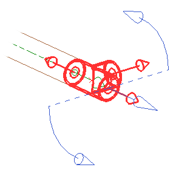
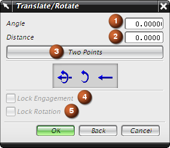

平移/旋转
平移/旋转对话框将为您提供各种命令来完成部件移动与/或旋转。
您可以做两件事情：
-
您可以沿端口附着的轴线来回移动部件。
-
您可以绕该轴旋转部件。

部件周围的两个旋转箭头表示旋转的正方向。
平移箭头指向部件移动的正方向。
-
平移和旋转 — 每次部件都将同时移动距离 (2) mm 与旋转角度 (1)度。
-
 旋转 – 每次部件将绕参考点转角度 (1)度。
旋转 – 每次部件将绕参考点转角度 (1)度。 -
 平移 – 每次部件都将沿平行于矢量的方向移动距离 (2)mm。
平移 – 每次部件都将沿平行于矢量的方向移动距离 (2)mm。

-
两点 (3) – 指定一个参考点和一个目标点。
-
锁定接合 (4) – 在移动对象时确保管线布置对象之间的连续性。
-
锁定旋转 (5) – 将部件的旋转保持为给定的角度值。